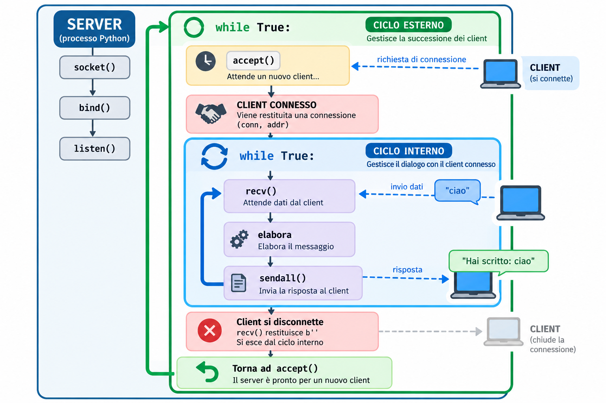

Dialogo persistente
Riconoscere il ciclo che permette allo stesso client di inviare più messaggi.
Lezione 2 · M2 · TPSIT · Classe quinta
Connessione persistente, cicli e server iterativo.
Ripartiamo dall’esperimento
Nella Lezione 1 il client riusciva a collegarsi, il server riceveva un messaggio e inviava la risposta. Subito dopo, però, la connessione veniva chiusa e per una nuova prova dovevamo riavviare il server.
Seguiamo il flusso del programma precedente:
socket()
↓
bind()
↓
listen()
↓
accept()
↓
recv()
↓
sendall()
↓
fineIl programma arriva semplicemente alla fine: nessuna istruzione gli dice di tornare indietro.
Al termine
Riconoscere il ciclo che permette allo stesso client di inviare più messaggi.
Individuare il valore b'' e usare break per terminare il dialogo corrente.
Spiegare perché il server torna ad accept() e serve un nuovo client alla volta.
Un tentativo da capire
main() non significa “ricomincia”Un’idea possibile è richiamare la funzione alla fine del programma:
def main():
...
main()La nuova chiamata parte prima che la precedente sia terminata. Le chiamate si accumulano una dentro l’altra:
main()
└── main()
└── main()
└── main()
...Parole nuove
Una funzione richiama sé stessa. È un meccanismo utile in altri problemi, ma non è ciò che ci serve per mantenere vivo questo server.
Un blocco di istruzioni viene ripetuto da un ciclo. Qui ripetiamo soltanto le operazioni necessarie al dialogo.
Primo passo
Partiamo dal server della Lezione 1 e ripetiamo la ricezione mentre il client rimane collegato.
import socket
HOST = "127.0.0.1"
PORT = 50000
def main():
with socket.socket(socket.AF_INET, socket.SOCK_STREAM) as server:
server.bind((HOST, PORT))
server.listen(1)
print(f"Server in ascolto su {HOST}:{PORT}")
conn, addr = server.accept()
with conn:
print("Client connesso:", addr)
while True:
dati = conn.recv(1024)
if not dati:
break
messaggio = dati.decode().strip()
print("Ricevuto:", messaggio)
risposta = "Hai scritto: " + messaggio
conn.sendall((risposta + "\n").encode())
if __name__ == "__main__":
main()while TrueÈ un ciclo che ripete il blocco di istruzioni. Qui mantiene vivo il dialogo: dopo una risposta, il server torna ad attendere altri dati dallo stesso client.
Una sola esecuzione di recv() gestisce un momento del dialogo. Il ciclo permette di eseguirla di nuovo senza chiudere conn.
Quando il client si scollega
if not dati?Durante il dialogo, recv() restituisce una sequenza di byte simile a questa:
b'ciao\r\n'Quando il client chiude correttamente la connessione, recv() restituisce una sequenza vuota:
b''Perciò questo controllo rileva la chiusura:
if not dati:
breakil client si è disconnesso
↓
termina il ciclo di dialogoIl peer è il programma all’altro capo della connessione: in questo caso, il client Telnet. break interrompe il ciclo interno. Uscendo dal blocco with conn:, la connessione viene chiusa.
Esperimento con Telnet
python server.pySe necessario, usa py server.py.
telnet 127.0.0.1 50000ciao
Hai scritto: ciao
TPSIT
Hai scritto: TPSIT
prova numero 3
Hai scritto: prova numero 3Abbiamo davvero risolto tutto?
Chiudi Telnet. Su Windows puoi premere Ctrl+], scrivere quit e premere Invio. Il ciclo di dialogo termina, ma anche il programma server arriva ancora alla fine.
Dobbiamo ripetere anche accept(): serve un secondo ciclo, più esterno.
Secondo passo
Scarica il programma completo oppure ricostruiscilo aggiungendo il ciclo esterno.
import socket
HOST = "127.0.0.1"
PORT = 50000
def main():
with socket.socket(socket.AF_INET, socket.SOCK_STREAM) as server:
server.bind((HOST, PORT))
server.listen(1)
print(f"Server in ascolto su {HOST}:{PORT}")
while True:
conn, addr = server.accept()
print("Client connesso:", addr)
with conn:
while True:
dati = conn.recv(1024)
if not dati:
break
messaggio = dati.decode().strip()
print("Ricevuto:", messaggio)
risposta = "Hai scritto: " + messaggio
conn.sendall((risposta + "\n").encode())
print("Client disconnesso")
if __name__ == "__main__":
main()Gestisce un client, termina il dialogo con esso e successivamente ne accetta un altro.
Leggiamo la struttura

listen() prepara una sola volta il socket all’ascolto; il ciclo esterno ripete accept() per accettare, uno dopo l’altro, nuovi client. Il ciclo interno gestisce invece lo scambio di più messaggi con il client attualmente connesso. Apri lo schema a dimensione intera in una nuova scheda.listen() e accept() non fanno la stessa cosaserver.bind((HOST, PORT))
server.listen(1)
while True:
conn, addr = server.accept()bind()Associa il socket server all’indirizzo IP e alla porta scelti.
listen()Mette quel socket nello stato di ascolto. Nella struttura del nostro programma viene eseguito una sola volta.
accept()Attende una richiesta di connessione. Per ogni nuovo client restituisce un nuovo socket conn, dedicato a quella connessione, e il relativo indirizzo addr.
Quando il dialogo termina e conn viene chiuso, il socket server è ancora in ascolto: non deve eseguire nuovamente listen(), ma torna alla successiva accept().
Gestisce la successione dei client: attende una connessione, poi torna ad accept().
Gestisce il dialogo con il client attualmente collegato: riceve, elabora e risponde.
Ora prova tu
Prodotto atteso: una prova osservabile nella quale il server risponde a tre messaggi, rileva la disconnessione e accetta un nuovo collegamento.
Esegui python server.py in un terminale.
Apri Telnet e invia almeno tre messaggi.
Verifica che il server mostri Client disconnesso senza terminare.
Apri nuovamente Telnet e invia un altro messaggio, senza riavviare il server.
Il nuovo messaggio deve ricevere una risposta e il server deve restare in esecuzione.
Sostituisci la costruzione della risposta con risposta = messaggio.upper().
Usa risposta = f"Hai inviato {len(messaggio)} caratteri".
Domanda finale
Sì, ma uno alla volta. Può accettare più client in successione, non servirli contemporaneamente.
Client in successione ≠ client contemporanei. Nelle prossime lezioni vedremo come affrontare questo limite; qui ci fermiamo all’osservazione.
Controlla
b'' restituito da recv()?